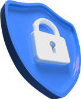

의료진을 위한
비대면 진료의 시작
대면-비대면 진료 연계 자동화 서비스, 솔닥 베이직
탁월한 진료 경험으로 강력한 매출 상승을 일으키세요
대면-비대면 진료 연계 자동화 서비스, 솔닥 베이직
탁월한 진료 경험으로 강력한 매출 상승을 일으키세요
솔닥 베이직은 우리 병원 환자에게 비대면 진료를 연결하는
가장 빠르고 간편한 진료 연계 자동화 서비스입니다.
환자가 의료진 모두에게 쉽고 편한 솔닥 베이직으로 환자와의 만남을 이어가세요.
우리 병원 대면 진료 환자에게
솔닥 베이직 비대면 진료 링크를 전달하세요
전송된 링크 클릭으로 쉽고 간편하게
솔닥 비대면 진료를 예약할 수 있습니다
환자가 QR코드를 스캔하는 방법으로
직접 예약할 수도 있습니다
다음 진료는 솔닥 비대면 진료로
환자와의 만남을 이어가세요
최소한의 비용으로 마케팅 툴보다 놀라운 매출 효과를 누려보세요
기존 환자, 우리 병원으로
재진을 유도합니다
과열 경쟁으로 인한
환자 유실 방지
부담스러운 추가 비용은
없습니다
더 편한 진료의 시작, 솔닥 베이직의 독보적인 기능을 확인하세요
솔닥 베이직 서비스를 경험해 본 의료진들의 후기
다른 플랫폼은 진료 뜨면 광클하는 경쟁
시스템이더라고요.솔닥이 제일 좋아요!
비대면 진료 보면 입금부터 처방까지 수기
로
해야 했는데 한방에 되니 너무 편해요
비대면 진료 보면 cs 해줄 일이 더 많은데
솔닥 쓰면 그런 일이 없습니다
비대면 진료 플랫폼이 제 살 깎아먹기라는
인식이 있었는데 그런 인식이 없어졌어요
환자 의약품 배송까지 상태를 확인할 수
있어서 안심이 되네요
스케줄 관리가 되서 대면 진료에 영향없이
비대면 진료를 볼 수 있어서 좋네요
대면 고객 위주로 비대면 진료를 진행
하니 재진률이 크게 늘었습니다
대면/비대면 진료 차트를 한번에 볼 수 있
어 진료의 질이 높아졌습니다.
다른 플랫폼은 진료 뜨면 광클하는 경쟁
시스템이더라고요.솔닥이 제일 좋아요!
비대면 진료 보면 입금부터 처방까지 수기
로
해야 했는데 한방에 되니 너무 편해요
비대면 진료 보면 cs 해줄 일이 더 많은데
솔닥 쓰면 그런 일이 없습니다
비대면 진료의 한계를 넘어 더 탁월한 의료 인프라를 제공합니다.
대면-비대면 진료 관리를 한 번에
표준화된 진료 경험으로 의사와 환자 모두에게모바일 예진지 사전제공
모바일 예진지로 필요한 정보를 미리 수집하세요.리마인더 알람 방송
재진 시기가 가까운 환자에게 리마인더 메시지를추가 금액 없이 누리는 모든 기능, 지금 바로 만나보세요
기존 원내 환자들 중 비대면 진료로 치료 및 경과 유지가 가능한 환자들(경증, 만성질환, 정신과질환, 시술/수술후 케어 등)에게 의료진이 대면진료 후 비대면 진료의새로운 옵션값을 제공하는 서비스입니다. 가령, 3개월 간격으로 원내에서 대면 진료를 통해 고혈압약을 주기적으로 받아가던 혈압이 잘 조절되고 있는 고혈압환자에게 6개월 간격으로 대면진료 및 혈압검사를 권장하고 3개월 간격으로 솔닥 베이직 비대면 진료 서비스를 권할 수 있습니다.
기존 원내 환자들 중 비대면 진료로 치료 및 경과 유지가 가능한 환자들(경증, 만성질환, 정신과질환, 시술/수술후 케어 등)에게 의료진이 대면진료 후 비대면 진료의새로운 옵션값을 제공하는 서비스입니다. 가령, 3개월 간격으로 원내에서 대면 진료를 통해 고혈압약을 주기적으로 받아가던 혈압이 잘 조절되고 있는 고혈압환자에게 6개월 간격으로 대면진료 및 혈압검사를 권장하고 3개월 간격으로 솔닥 베이직 비대면 진료 서비스를 권할 수 있습니다.
기존 원내 환자들 중 비대면 진료로 치료 및 경과 유지가 가능한 환자들(경증, 만성질환, 정신과질환, 시술/수술후 케어 등)에게 의료진이 대면진료 후 비대면 진료의새로운 옵션값을 제공하는 서비스입니다. 가령, 3개월 간격으로 원내에서 대면 진료를 통해 고혈압약을 주기적으로 받아가던 혈압이 잘 조절되고 있는 고혈압환자에게 6개월 간격으로 대면진료 및 혈압검사를 권장하고 3개월 간격으로 솔닥 베이직 비대면 진료 서비스를 권할 수 있습니다.
기존 원내 환자들 중 비대면 진료로 치료 및 경과 유지가 가능한 환자들(경증, 만성질환, 정신과질환, 시술/수술후 케어 등)에게 의료진이 대면진료 후 비대면 진료의새로운 옵션값을 제공하는 서비스입니다. 가령, 3개월 간격으로 원내에서 대면 진료를 통해 고혈압약을 주기적으로 받아가던 혈압이 잘 조절되고 있는 고혈압환자에게 6개월 간격으로 대면진료 및 혈압검사를 권장하고 3개월 간격으로 솔닥 베이직 비대면 진료 서비스를 권할 수 있습니다.
기존 원내 환자들 중 비대면 진료로 치료 및 경과 유지가 가능한 환자들(경증, 만성질환, 정신과질환, 시술/수술후 케어 등)에게 의료진이 대면진료 후 비대면 진료의새로운 옵션값을 제공하는 서비스입니다. 가령, 3개월 간격으로 원내에서 대면 진료를 통해 고혈압약을 주기적으로 받아가던 혈압이 잘 조절되고 있는 고혈압환자에게 6개월 간격으로 대면진료 및 혈압검사를 권장하고 3개월 간격으로 솔닥 베이직 비대면 진료 서비스를 권할 수 있습니다.
기존 원내 환자들 중 비대면 진료로 치료 및 경과 유지가 가능한 환자들(경증, 만성질환, 정신과질환, 시술/수술후 케어 등)에게 의료진이 대면진료 후 비대면 진료의새로운 옵션값을 제공하는 서비스입니다. 가령, 3개월 간격으로 원내에서 대면 진료를 통해 고혈압약을 주기적으로 받아가던 혈압이 잘 조절되고 있는 고혈압환자에게 6개월 간격으로 대면진료 및 혈압검사를 권장하고 3개월 간격으로 솔닥 베이직 비대면 진료 서비스를 권할 수 있습니다.
기존 원내 환자들 중 비대면 진료로 치료 및 경과 유지가 가능한 환자들(경증, 만성질환, 정신과질환, 시술/수술후 케어 등)에게 의료진이 대면진료 후 비대면 진료의새로운 옵션값을 제공하는 서비스입니다. 가령, 3개월 간격으로 원내에서 대면 진료를 통해 고혈압약을 주기적으로 받아가던 혈압이 잘 조절되고 있는 고혈압환자에게 6개월 간격으로 대면진료 및 혈압검사를 권장하고 3개월 간격으로 솔닥 베이직 비대면 진료 서비스를 권할 수 있습니다.